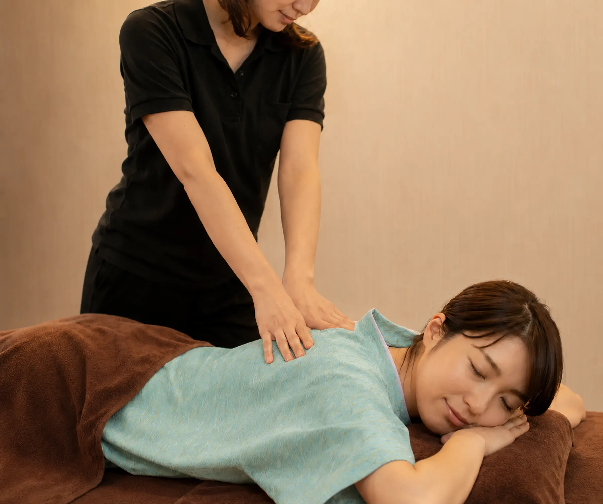
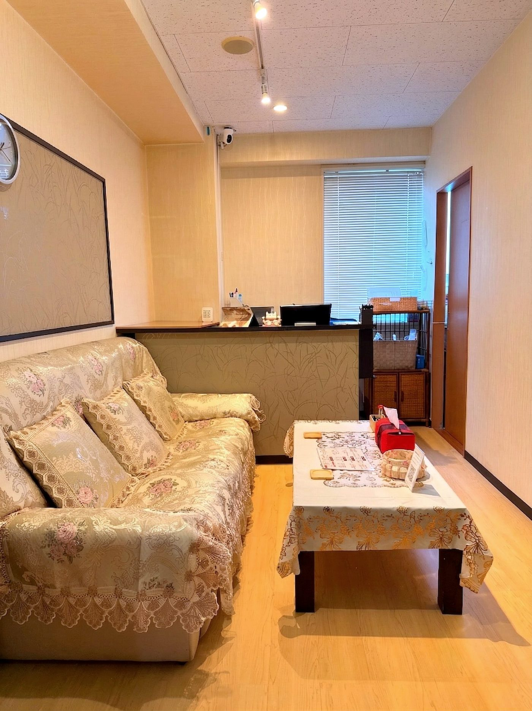
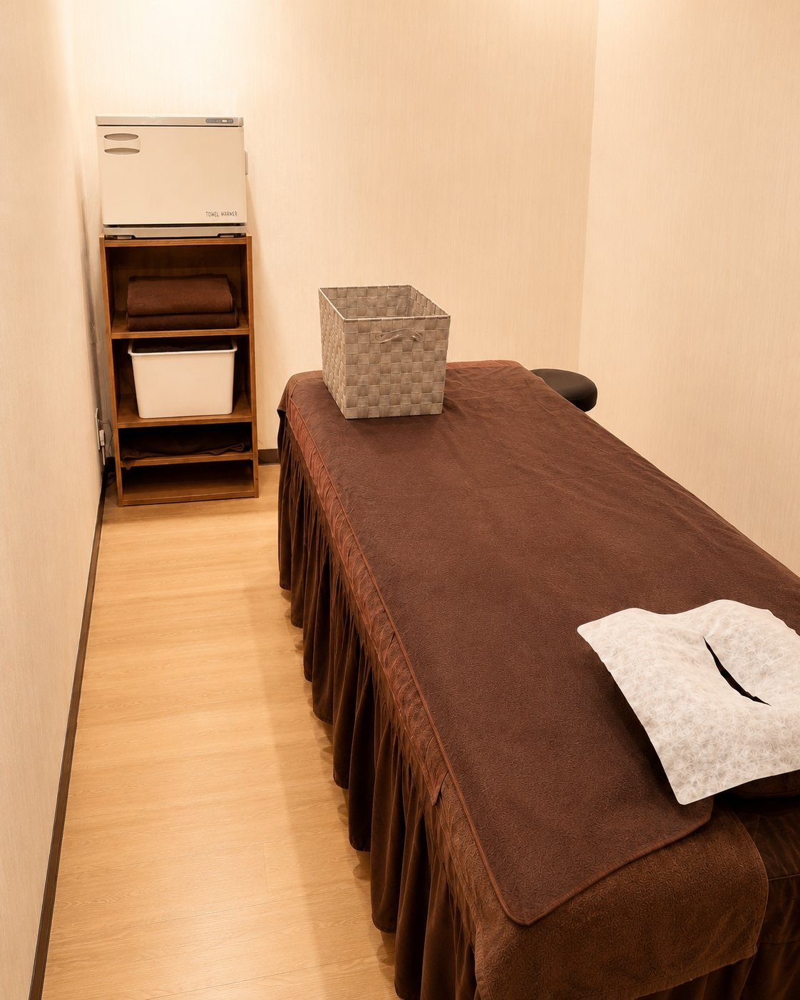
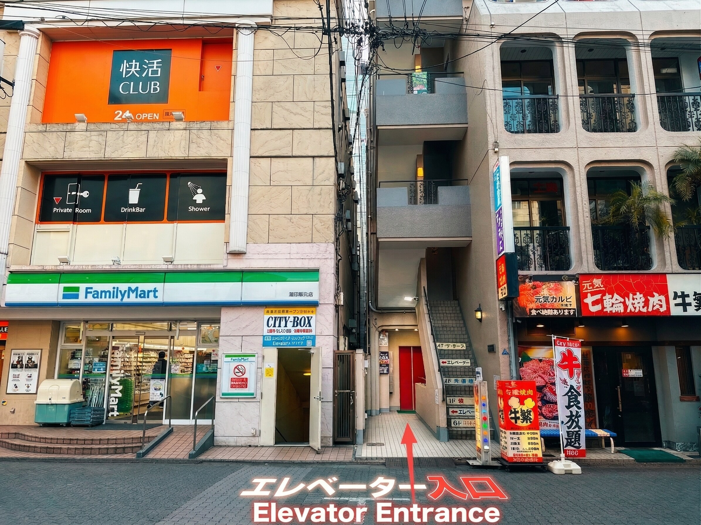

발 케어
Foot Reflexology
발바닥과 종아리를 중심으로 편안하게 관리하며, 피로 정도에 맞춰 시간을 선택할 수 있습니다.
KAMATA · TOKYO
여행 중에도 차분한 휴식을.
신유안 Shin Yuu An은 JR 가마타역 동쪽 출구에서 도보 약 1분 거리에 있으며 발 케어, 바디 릴랙세이션, 아로마 오일 트리트먼트를 제공합니다.
매장의 답변을 받은 뒤 예약이 확정됩니다.

아래 서비스는 일상적인 휴식을 위한 릴랙세이션 관리이며 의료 또는 치료 행위가 아닙니다.
발바닥과 종아리를 중심으로 편안하게 관리하며, 피로 정도에 맞춰 시간을 선택할 수 있습니다.
옷 위로 진행합니다. 30분은 상반신 또는 하반신 중 하나를 선택하며, 전신은 60분 이상을 선택해 주세요.
아로마 오일을 사용하는 릴랙세이션 코스로 30분부터 120분까지 선택할 수 있습니다.
독립형 관리 공간으로, 세 면은 벽으로 구분되어 있고 입구는 커튼으로 되어 있습니다. 차분하고 비교적 프라이빗하게 이용하실 수 있습니다.



2인 같은 공간을 요청할 수 있습니다. 같은 공간 이용에 별도 객실 추가 요금은 없습니다. 모든 코스에서 같은 공간을 요청할 수 있고, 두 분이 서로 다른 코스를 선택할 수도 있습니다. 다른 코스를 원하시면 예약 양식의 비고란에 두 번째 고객님의 코스를 적어 주세요. 선택하신 코스와 시간에 맞춰 공간, 두 명의 테라피스트 및 시작 가능 여부를 확인한 뒤 답변으로 안내합니다. 신청만으로 같은 공간 이용이 확정되지는 않습니다. 2인 같은 공간 요청 →
주소: 〒144-0052 도쿄도 오타구 가마타 5-12-3 기타지마 빌딩 4층
JR 가마타역 동쪽 출구에서 도보 약 1분입니다. 빌딩에 들어간 뒤 안쪽으로 이동하여 입구 내부의 엘리베이터를 타고 4층으로 오세요.
영업시간: 11:00~다음 날 2:00 (1월 1일 휴무).
결제 방법: 현금, 신용카드, PayPay. 이용 가능한 카드 종류는 매장에서 확인해 주세요.